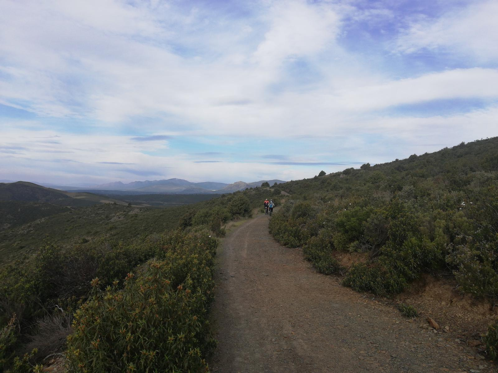
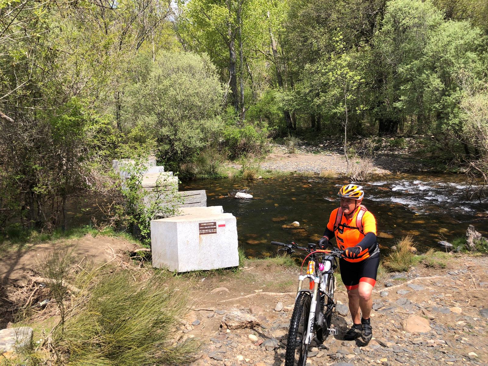
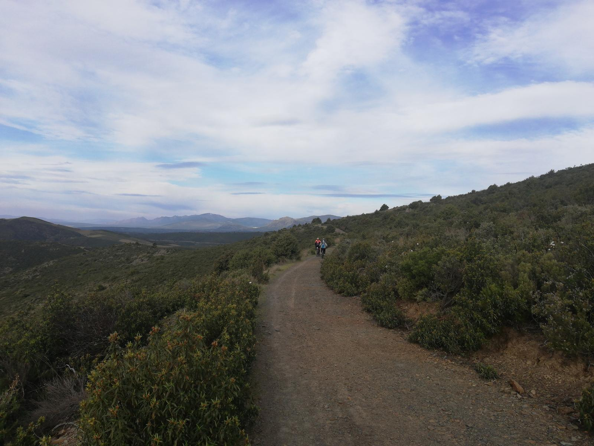
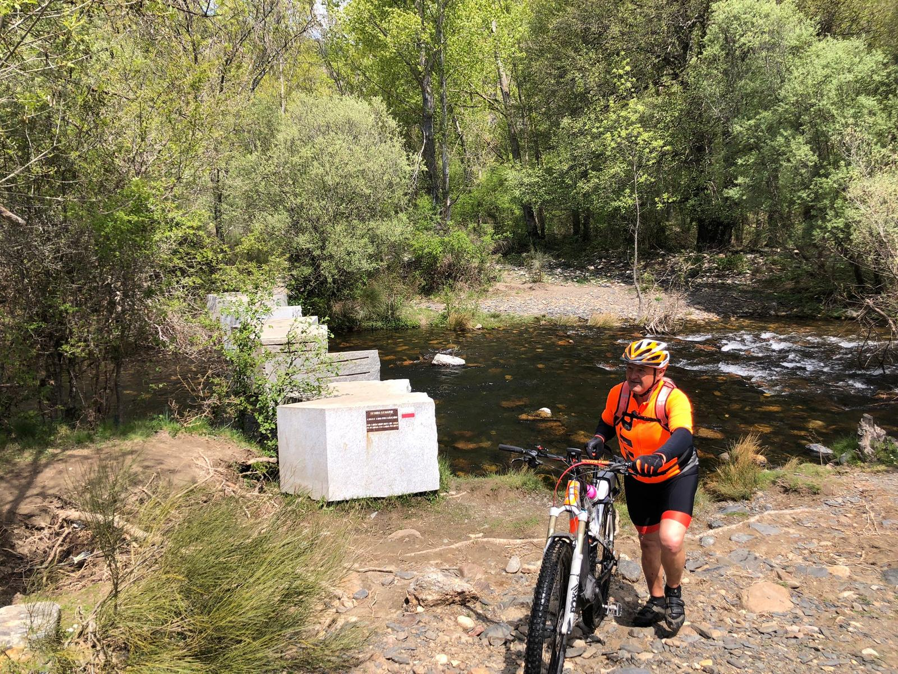

Las Mejores rutas en Bici
Hacer Rutas en bici en Laudio / Llodio es una de las mejores formas de descubrir esta región, aunque no siempre es fácil saber adónde ir. Para ponértelo fácil, hemos seleccionado las mejores Rutas en bicicleta en Laudio / Llodio. Encuentra tu favorita y sal a explorar.
 


